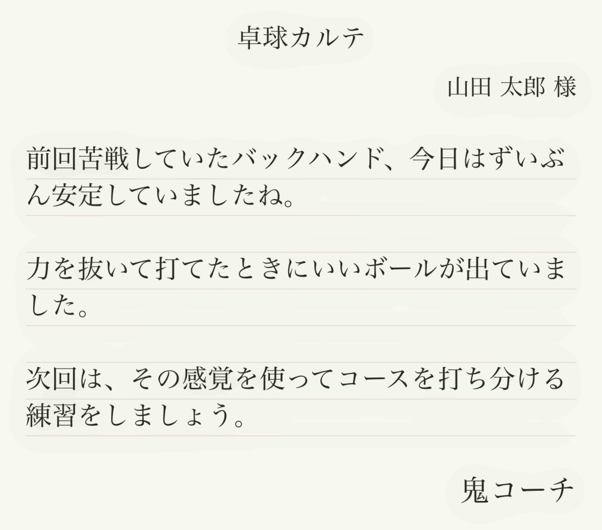
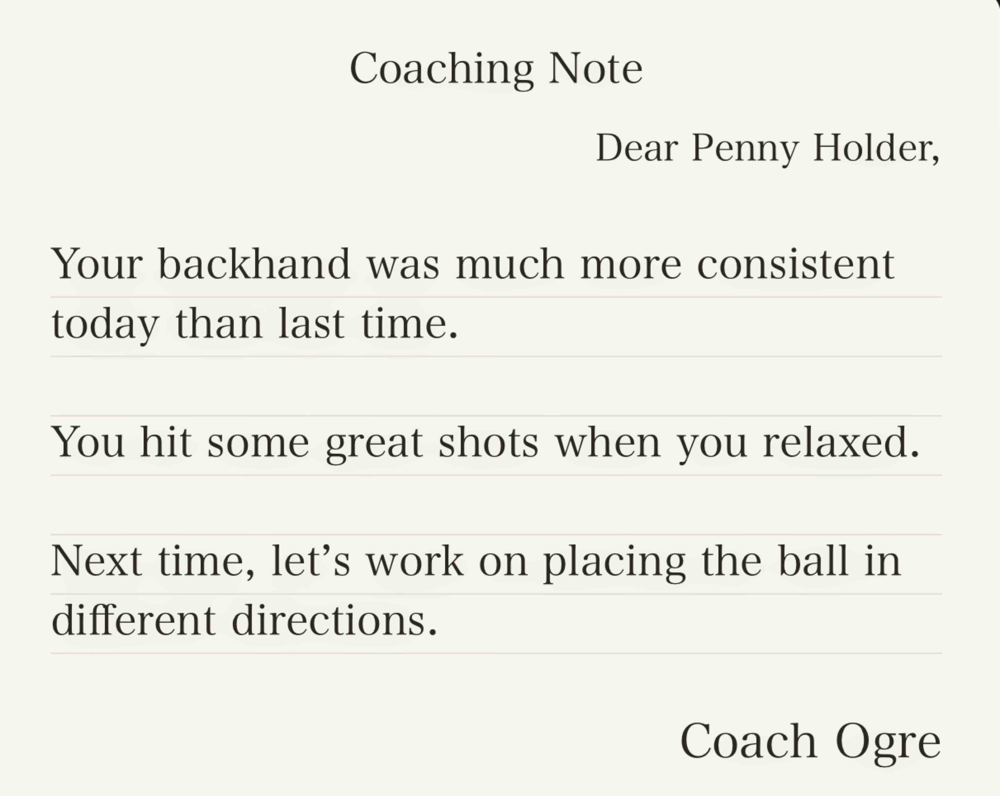

PongQR
PongQR
コンセプト
レッスンの続きを、次のレッスンへ。
PongQR（卓球カルテ）は、卓球コーチのアドバイスを記録し、生徒に手渡すアプリです。 その場で伝えたコーチの言葉をかたちに残し、いつでも振り返れるようにします。
レッスンの最後に、コーチはスマートフォンに向かって話すだけ。 その言葉が、一枚の「卓球カルテ」になります。 QRコードを読み取れば、生徒の手元にも同じカルテが残ります。 アカウント登録も、連絡先の交換も必要ありません。
なぜ、カルテなのか
レッスン中には、たくさんのアドバイスが生まれます。 でも、次のレッスンまで覚えていられるでしょうか。 生徒は忘れてしまうかもしれません。 コーチも、前回どんなアドバイスをしたか思い出せないかもしれません。
だから、記録に残します。 生徒は、自主練習のときに読み返せます。 コーチは、次のレッスンを前回の続きから始められます。
病院のカルテのように、一人ひとりへのアドバイスと次の課題を一枚に。 手紙のような紙のデザインで、コーチの言葉を生徒に届けます。
一度きりのアドバイスを、次につながるアドバイスへ。

使い方
コーチ
- 生徒を選ぶ
- アドバイスを声で記録する
- QRコードでカルテを手渡す
生徒
- QRコードを読み取って、カルテを受け取る
- いつでも読み返す
- 普段使うアプリにコピー・共有する
生徒も、無料のPongQRアプリでカルテを受け取れます。
料金
- コーチ：カルテ作成は、最初の10枚まで無料。以降は必要な分だけ追加購入できます。
- 生徒：カルテの受け取りは、無料
レッスンをつなぐ
コーチには、生徒ごとのレッスン履歴。 生徒には、コーチから受け取ったカルテ。 同じアプリで、教える人と教わる人をつなぎます。
Concept
Let the next lesson pick up where the last one left off.
PongQR (Table Tennis Coaching Notes) is an app that captures advice from table tennis coaches and puts it directly into their players’ hands. It turns spoken advice into something players can keep and revisit anytime.
At the end of a lesson, the coach simply speaks into their phone. Those words become a single Coaching Note. With a quick scan of a QR code, the player receives the same note. No accounts to create. No contact details to exchange.
Why Coaching Notes?
Every lesson is full of advice. But how much of it will you remember by the next one? Players may forget what they were told. Coaches may struggle to recall what they said last time.
That’s why it’s worth keeping a record. Players can revisit the advice during their own practice. Coaches can build on the last lesson.
Each note captures the advice and next steps for one player. Designed to look like a personal letter, it delivers the coach’s words in a form worth keeping.
Turn one-time advice into lasting progress.

How It Works
For Coaches
- Select a player
- Record your advice by voice
- Hand over the Coaching Note with a QR code
For Players
- Scan the QR code to receive the Coaching Note
- Revisit it anytime
- Copy or share it to the apps you already use
Players can receive Coaching Notes using the free PongQR app.
Pricing
- Coaches: Your first 10 Coaching Notes are free. Buy additional credits whenever you need them.
- Players: Receiving Coaching Notes is free.
Every Lesson, Connected
For coaches, a lesson history for every player. For players, a collection of notes from their coaches. One app that connects those who teach with those who learn.